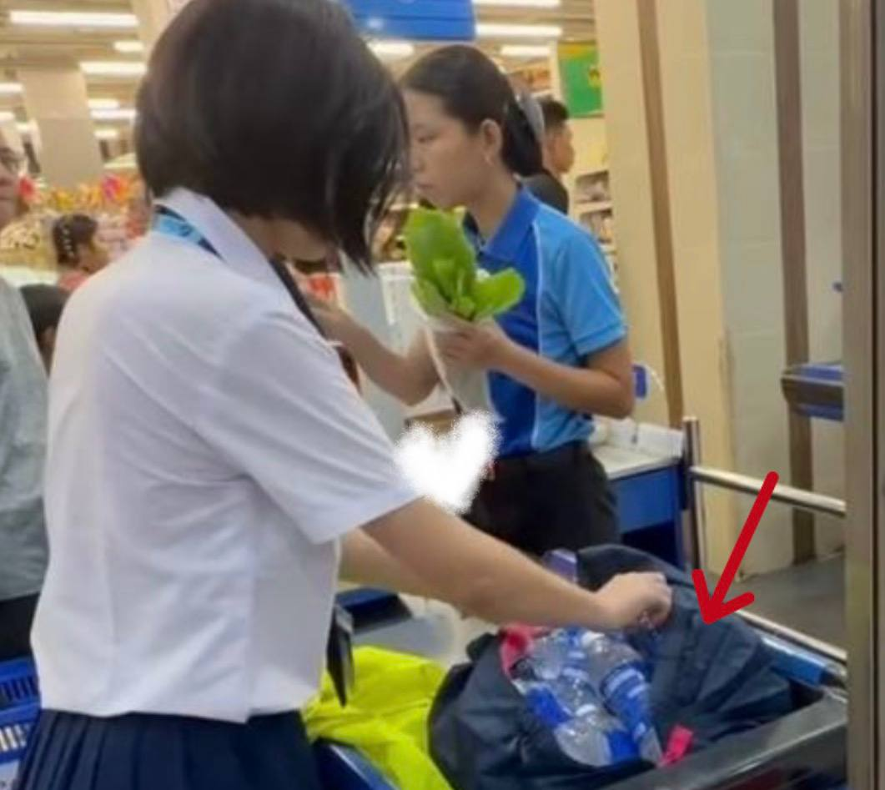
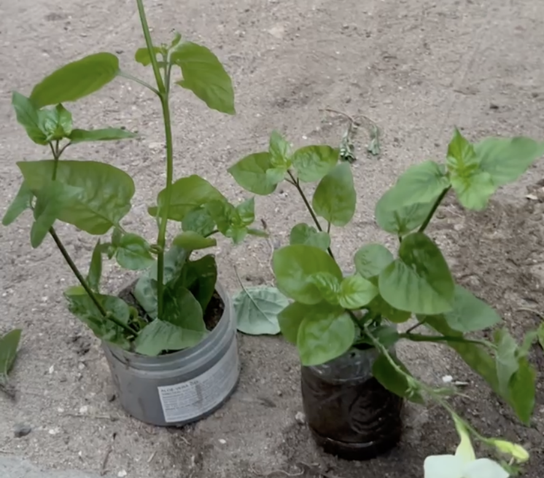
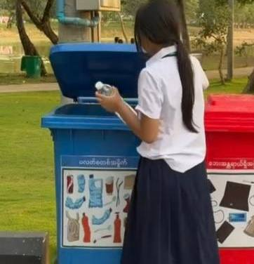
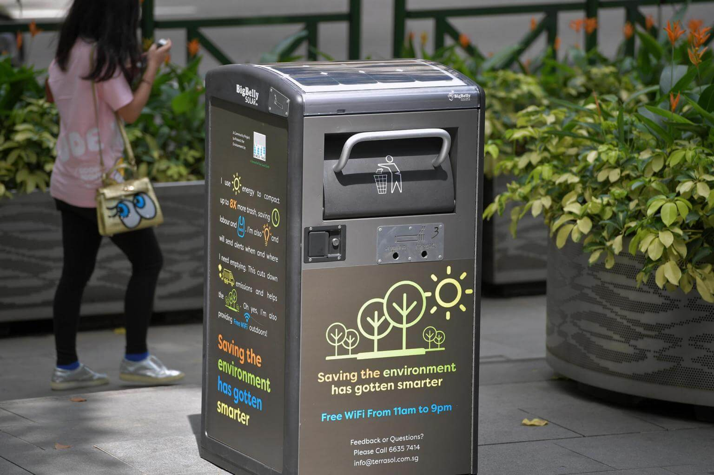
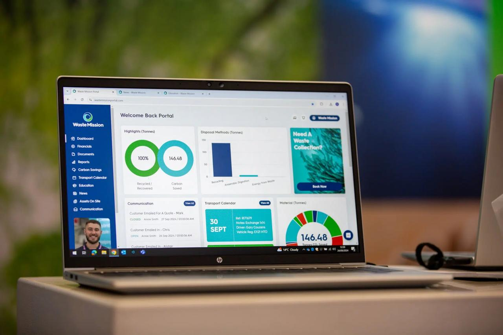
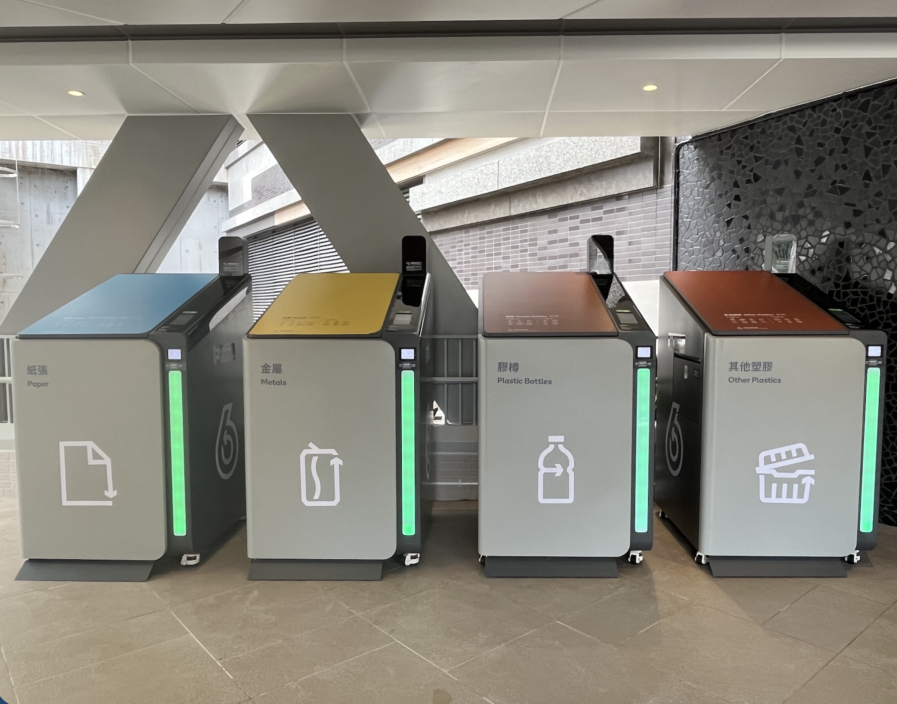

Practical Eco-Friendly Actions

Reduce: Using less plastic in daily life by avoiding unnecessary single-use items helps decrease the amount of waste produced at the source and supports more sustainable consumption habits.

Reuse: Items should be used multiple times instead of being thrown away after a single use, helping to extend their lifespan and reduce the demand for new plastic products.

Recycle: Plastic waste should be properly sorted and processed so it can be converted into new materials, reducing landfill waste and supporting a cleaner, more sustainable environment.
Smart Strategies

Smart Bins: Smart bins use sensors and AI technology to automatically detect and separate plastic waste. They reduce recycling mistakes and keep public areas cleaner. This helps our community recycle more effectively and supports a smarter, greener city.

Plastic Waste Tracking Systems: Digital tracking systems monitor plastic waste levels in real time. They collect data about waste patterns and help prevent overflowing bins. This allows the city to improve waste management and reduce plastic pollution.

Smart Recycling Systems: Smart recycling systems use AI and automated machines to sort plastic waste quickly and accurately. They increase recycling rates and reduce landfill waste. This technology supports sustainable living in a smart city.